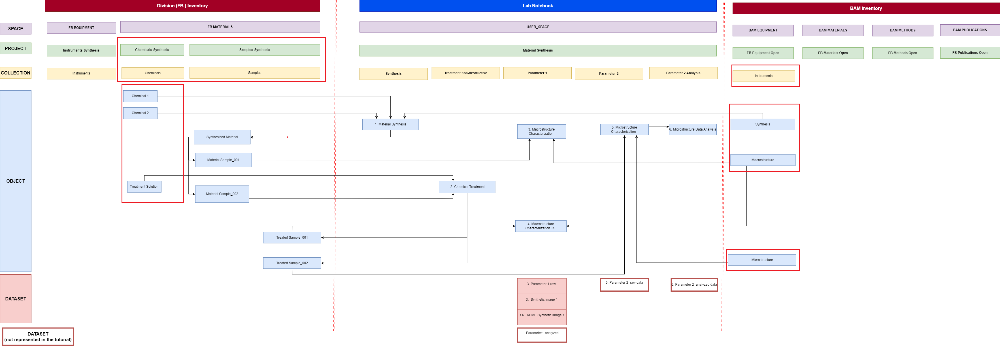
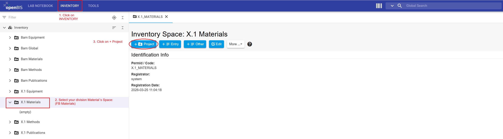
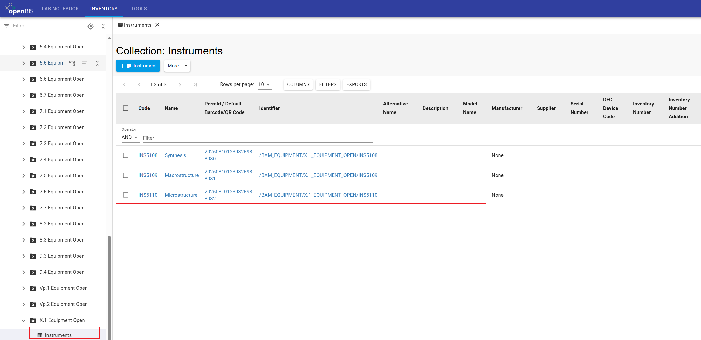
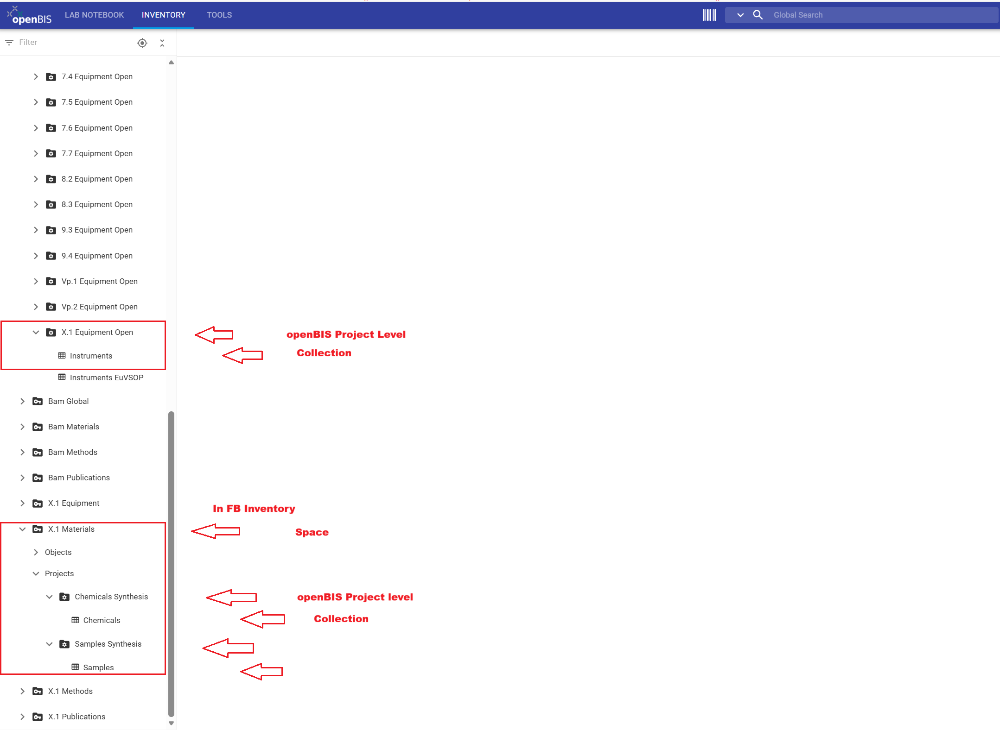

This tutorial prepares the inventory structure used in the follow-up tutorial for users "Register inventory items". You will create
the required projects and collections, register the Chemical and Instrument objects used in the “Material Synthesis” example
so that division members can subsequently register Sample objects.
To complete this tutorial, you must have the Group Admin role in the Data Store. This role is assigned to Data Store Stewards (DSSts),
division leads and their deputies.
What you will learn
How to register inventory entities such as projects, collections, and objects in BAM and FB inventory using the graphical user interface (GUI).
How to manage access in the inventory.
Before you begin
This tutorial is designed for openBIS version 20.10.12 and does not require prior knowledge on openBIS. Previous tutorials provide the context for this example.
You need to have access to the playground instance (access restricted to BAM employees with VPN connection). How to log in to the Data Store instances is described in this guide.
You must be assigned the Group Admin role in Data Store. This role is assigned to Data Store Stewards (DSSt), division leads, and their deputies. Check your assigned role following this guide to confirm that you have sufficient rights to complete this tutorial.
If you encounter problems, contact the Data Store team.
Tutorial sequence
Tutorial sequence: This tutorial is
Step 3 of 5. It follows
“Upload data in the Lab Notebook” completed by each user, including DSSts, and prepares the
Inventory projects, collections, and objects required by users to implement the tutorial
“Register inventory items.”
Key concepts
Inventory in the Data Store
The Inventory sections for the Data Store are FB Inventory and BAM Inventory. By default, objects in the FB Inventory are available to the relevant division. Access can also be granted to collaborators from other divisions at the space or project level. Objects in the BAM Inventory are visible to BAM members with access to the Data Store.
Each division has four FB Inventory spaces: Equipment, Materials, Methods, and Publications. These spaces are named using the division number, for example, X.1 Equipment and X.1 Materials. The BAM Inventory contains institution-wide spaces such as BAM Equipment. Within these spaces, each division has a predefined project, such as X.1 Equipment Open.
Inventory spaces organize tangible and intangible resources used or generated during research—for example, instruments, chemicals, samples, software, and standard operating procedures (SOPs). Note that within the inventory spaces, you find a Space called Publications. The use of this Space is optional and does not replace the purpose of the BAM database Publica to store publications metadata.
What should be registered?
Not every inventory item used by a division needs to be registered in the Data Store. Register items whose metadata is needed to understand, trace, or reproduce the resulting research data.
In standardization processes, for example, the calibration date (metadata) of an instrument is required for certification and evaluation. Therefore, instruments used in these workflows need to be registered and linked to experimental steps in the Data Store.
These connections are established through user-defined openBIS parent-child relationships.
Division-number placeholder:
In this tutorial, X.1 represents your division number.
Replace X.1 with the number assigned to your division whenever
it appears in a space name, project name, navigation path, table, or Excel
file.
The Data Store contains two Inventory sections: BAM Inventory and the FB Inventory. Select the upper Inventory
tab, and use the drop-down menus in the left-hand navigation panel to browse their contents.
The BAM Equipment space contains a predefined project for
each division, such as X.1 Equipment Open. Replace
X.1 with your division number and use the corresponding project
to register large devices and instruments shared by multiple divisions.
Inventory structure for "Material Synthesis"
The “Material Synthesis” example is represented in the
Data Store using the hierarchy
Space → Project → Collection → Object.
Before Users can register and connect inventory items, Data Store Stewards
(DSSts) prepare the required Inventory structure.
In this tutorial, you will set up the parts of the data model that are
required for the follow-up User tutorial "Register inventory items". This includes creating the
division-specific projects and collections in the FB Inventory, preparing
the Instruments collection in the BAM Inventory, and registering the
Chemical and Instrument objects used in the “Material Synthesis” example.

Data model for the “Material Synthesis” tutorial example.
Entities framed in red indicate the Inventory structure and inventory
objects prepared by Data Store Stewards for the follow-up User tutorial.
Data Store Steward tasks shown in the figure (FB corresponds to X.1 for the tutorial example):
Create the CHEMICALS_SYNTHESIS and
SAMPLES_SYNTHESIS projects in
X.1 Materials.
Create and configure the Chemicals and
Samples collections in the FB Inventory.
Create and configure the Instruments collection in
BAM Equipment → X.1 Equipment Open.
Batch-register the Chemical and
Instrument objects required for the tutorial example.
Prepare project-level access so that Users can continue working with
the prepared Inventory structure.
The Samples collection is intentionally prepared without
the Sample objects used later in the workflow. In the follow-up user tutorial
"Register inventory items",
Users review the prepared Inventory structure and register these Sample
objects themselves. The registered inventory objects can subsequently be
connected with the corresponding experimental steps in the Lab Notebook.
Tutorial workflow
This tutorial guides you through the following steps:
Register projects in FB Inventory
Register collections in both BAM and FB inventories
Register multiple objects using batch registration with Excel files
Manage access rights for collaborators
Step 1: Register projects in FB Inventory
As a Data Store Steward (DSSt), division lead, or deputy, you can create projects CHEMICALS_SYNTHESIS and SAMPLES_SYNTHESIS in
the FB Inventory. Other division members do not have sufficient rights to create projects in the FB inventory spaces. In Step 4 of this tutorial,
you will learn how to grant access to projects in the FB Inventory to enable them to register and link these inventory objects.
In the following instructions, replace X.1 with your division
number.
Instructions for registering a project:
Click the INVENTORY tab in the upper navigation bar
In the left-hand menu, open the Inventory drop-down menu to select your X.1 Materials Space.
Click the + Project button to open the new project form.
Enter the project information using the CODE and Description values provided in the table below.
Review all entries and click Save.
Complete steps 1 to 5 to register CHEMICALS_SYNTHESIS and SAMPLES_SYNTHESIS.
Values for registering projects in FB Inventory
Space name
Code
Description
X.1 Materials
CHEMICALS_SYNTHESIS
Chemicals used in the "Material Synthesis" tutorial example. The records are fictional and intended
solely for training and demonstration purposes.//Chemikalien aus dem Tutorial Beispiel „Material Synthesis“.
Die Einträge sind fiktiv und dienen ausschließlich Schulungs- und Demonstrationszwecken.
X.1 Materials
SAMPLES_SYNTHESIS
Samples generated in the "Material Synthesis" tutorial example. The records are fictional and intended solely for training
and demonstration purposes.//Proben aus dem Tutorial Beispiel "Material Synthesis". Die Einträge sind fiktiv und dienen
ausschließlich Schulungs- und Demonstrationszwecken.

Click on INVENTORY tab. Select the X.1 Materials Space, and press on + Project tab to open the new project form.
EnterCODE (*) (mandatory in openBIS) and Description (Mandatory for Data Store). Review the entries and Save.
General information
This section provides guidance for completing the new project form.
Code requirements
Mandatory fields in openBIS are marked with an asterisk (*)
Codes should be meaningful, in English, and between 3 and 30 characters
A code cannot be modified or reused
Description requirements
Mandatory for BAM Data Store
Should contain enough detail to be understandable to people outside the group
Should follow the format: English//German
Should contain 2 to 50 words
CODE and Description display: If the CODE and Description fields are not displayed and you encounter a white page,
click on the More drop-down menu and select Show Identification Info.
Project CODE is a unique identifier: Once an openBIS project has been saved, its project code cannot be modified or reused within the same openBIS instance.
To display CODE and Description , if hidden, click on the More drop-down menu and select Show Identification Info.The newly registered CHEMICALS_SYNTHESIS and SAMPLES_SYNTHESISprojects are displayed under X.1 Materials in the left-hand navigation menu.
Deleting a project:
A project can be deleted only when it is empty. Delete all collections within
the project before deleting the project itself. Then select the project in
the left-hand navigation menu and choose
More → Delete.
Congratulations! You have successfully created two projects within the FB Inventory.
Step 2: Register collections in BAM and FB inventories
A project can contain multiple collections for organizing inventory objects
of one or more types. Collections provide a logical structure that supports
navigation, data management, and data retrieval.
In this tutorial, you will create three collections. The
Chemicals and Instruments collections will
be used for batch registration in Step 3. Division members will use the
Samples collection in the follow-up tutorial,
“Register inventory items.”
Instructions for registering a collection:
Use the table Values for registering collections in BAM and FB Inventories
to complete the following steps.
In the left-hand main menu, navigate to the corresponding Space.
Select the project
Click the + Other tab
In the drop-down menu, start typing collection and select it
Leave autogenerated Code(*) unchanged
Enter collection Name
Select the Object type, start typing within the Default object type drop-down menu
Select List view as the Default collection view
Review all entries and click Save
Repeat steps 1 to 9 to register a total of three collections: Chemicals, Samples and Instruments.
General information
A collection can be configured with a default object type. When a default object type is defined, the collection provides a direct registration button
for that type, for example + Sample, + Chemical, or + Instrument. This allows users to open the corresponding object-registration form directly from
the collection.
Values for registering collections in BAM and FB Inventories
Space Name
Project Name
Collection Name
Default Object Type
X.1 Materials
CHEMICALS_SYNTHESIS
Chemicals
Chemical
X.1 Materials
SAMPLES_SYNTHESIS
Samples
Sample
BAM Equipment
X.1 Equipment Open
Instruments
Instrument
Registered collections are visible in the Inventory menu on the left. Navigate to the X.1 Materials space and open the CHEMICALS_SYNTHESIS and SAMPLES_SYNTHESIS projects to view
the Chemicals and Samples collections.
The Instruments collection registered in BAM Inventory for your division is displayed in the menu on the left. Navigate to the X.1 Equipment Open project. Note that this collection has a predefined object type and the + Instrument button is available to open directly the Instrument form.
Congratulations! You have successfully created three collections, one in BAM Inventory and two in FB Inventory.
Tangible inventory items, such as instruments and samples, and intangible items, such as standard operating procedures and software, are represented in openBIS as Objects. An object type defines
the properties available for a particular category of objects. In this tutorial, we will register objects of the type Chemical in the FB Inventory and Instrument in the BAM Inventory.
Download Excel files
Excel files are needed to batch-register objects as described in step 3. Download the following two Excel files.
Instructions to prepare the Excel file for batch registration:
Download instruments.xlsx using the button above.
Open the file and review the instrument objects prepared for the “Material Synthesis” example.
In the BAM Organizational Entity column, replace X.1 with your division number
Check Instrument names.
Do not change the column headings, object type information, or worksheet structure.
Save the modified Excel file under a clear filename, for example instruments_BAM_material_synthesis.xlsx.
Terminology in Excel files:
Because of an unresolved terminology issue in openBIS 20.10.12, generated
and exported Excel files use labels that differ from those in the current
openBIS user interface:
Experiment corresponds to a
collection.
Sample Type corresponds to an
object type.
When completing an Excel file, do not rename the columns. openBIS requires
the original column headings for batch registration and batch update.
Instructions for batch-registering objects
Use table below: Values for batch-registering objects to enter values required for steps 1 to 3.
In the left-hand menu, navigate to the Collection you want to use to register objects.
Open the More drop-down menu and select XLS Batch Register Objects.
In the Register Objects window, click Choose file—shown as
Datei auswählen when the browser language is German and select the corresponding Excel file containing the objects to register.
Verify that the correct filename is displayed, and then click
Accept to start the batch registration.
Return to the Instruments or Chemicals collection and confirm that the new objects are registered.
Repeat steps 1 to 4 to register Chemicals and Instruments with Excel files using batch registration.
Note that you have only modified the Excel file for Instruments, while the Excel file for Chemicals will be uploaded as provided here.
Values for batch-registering objects
Space Name
Project Name
Collection Name
Batch registration file
X.1 Materials
CHEMICALS_SYNTHESIS
Chemicals
chemicals.xlsx
BAM Equipment
X.1 Equipment Open
Instruments
instruments.xlsx
Navigate to X.1 Materials → CHEMICALS_SYNTHESIS → Chemicals. Open the More drop-down menu and choose XLS Batch Register Objects.
Click Choose file—shown as
Datei auswählen when the browser language is German—and
select the corresponding Excel file. Verify the filename, and then click
Accept to start the batch registration. To create a new
batch-registration file, click Download under
Template to obtain a blank Excel template for the default
object type.
The registered objects of type Chemical are displayed in FB Inventory.

The registered objects of type Instrument are displayed in BAM Inventory.
General information
In a separate tutorial, we will use the Batch update functionality to update the metadata of existing Objects. To register a single Object, click the + Chemical or + Instrument button, complete the Object form, and click Save.
Congratulations! You have batch-registered chemicals and instruments in the FB and BAM Inventories respectively, and prepared a Samples collection. All of these inventory items will be used by you and your colleagues in the following tutorial.
Access to Inventory content in the Data Store depends on the roles assigned
at the space and project levels. For
detailed information about roles and permissions, see the
Roles and Rights concept in the Data Store wiki
(accessible only within the BAM network).
FB Inventory
Data Store Stewards (DSSts), division leads, and their deputies can create
projects in their division's FB Inventory spaces and manage access to these
projects. Division members and collaborators can edit project content when
they have been assigned the User role for the corresponding
project.
Project-level access can therefore be used to share selected inventory
content with collaborators from other divisions. For example, a division
can register samples in its FB Inventory and grant access to collaborators
from another division who perform measurements on those samples. The DSSts
of the division that owns the project remain responsible for managing its
access.
BAM Inventory
Inventory items that should be visible across BAM, such as instruments
shared by multiple divisions, can be registered in the
BAM Inventory. All Data Store members can view objects in
BAM Inventory spaces. Members of a division can edit content in their
corresponding division-specific project, such as
X.1 Equipment Open.
Access management:
DSSts can manage project-level access in the
FB Inventory. Access to the
BAM Inventory is managed centrally. If BAM Inventory
permissions need to be added or restricted, contact the Data Store team.
Instructions to grant access to a project in the FB Inventory:
In the left-hand navigation menu, select the relevant project in the
FB Inventory.
Open the More drop-down menu and select
Manage access.
From the Role drop-down menu, select
User.
From the Grant to drop-down menu, select
Group to grant access to an entire division, or
User to grant access to a specific collaborator.
In the Group or User field, enter the division number
if you selected Group, or the BAM username if you
selected User.
Verify the selected role and recipient, and click
Grant access.
After completing this tutorial, you should be able to create projects and
collections in the Inventory, configure collections with the appropriate
object types, batch-register inventory objects, and manage project-level
access in the FB Inventory.
For the “Material Synthesis” example, you have prepared the
inventory structure required for the follow-up User tutorial "Register inventory items":
BAM Inventory → BAM Equipment → X.1 Equipment Open → Instruments,
containing the Instrument objects used in the workflow.
FB Inventory → X.1 Materials → CHEMICALS_SYNTHESIS → Chemicals,
containing the Chemical objects used in the workflow.
FB Inventory → X.1 Materials → SAMPLES_SYNTHESIS → Samples,
prepared for division members to register Sample objects.
Division members with the User role can now continue with
the follow-up tutorial "Register inventory items" to review these inventory items and register the Samples
generated during the “Material Synthesis” workflow.

The Inventory structure prepared in this tutorial. In the BAM Inventory, the BAM Equipment → X.1 Equipment Open → Instruments collection
contains the registered Instrument objects. In the FB Inventory, X.1 Materials → CHEMICALS_SYNTHESIS → Chemicals contains the registered
Chemical objects, while X.1 Materials → SAMPLES_SYNTHESIS → Samples is prepared for Users to register Sample objects in the follow-up tutorial.
Back to top